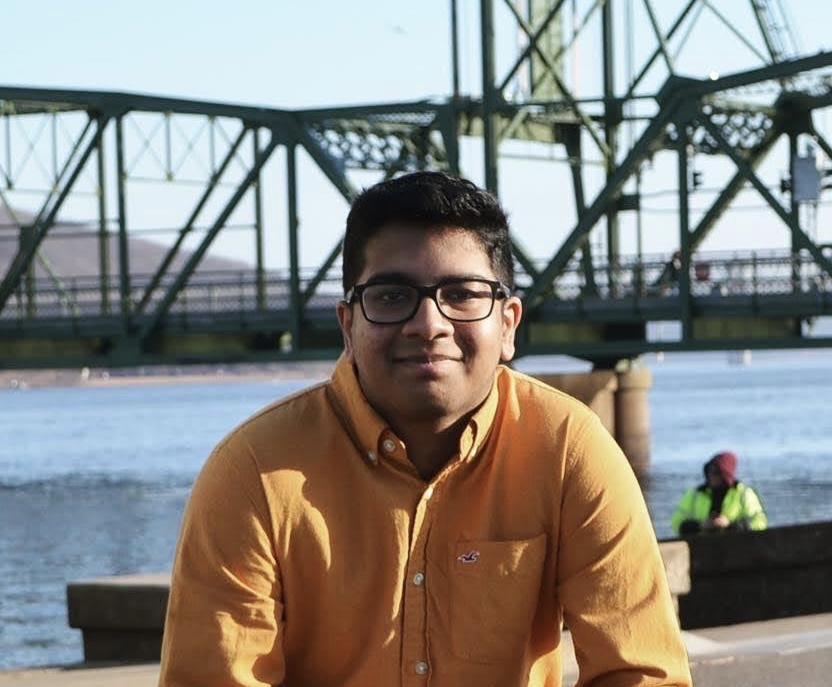

Sanketh Kodimala
Hi, my name is Sanketh Kodimala and I'm currently a junior at the University of Minnesota. I have a natural curiosity for emerging technologies, consistently seeking opportunities to broaden my understanding, with a particular focus on AI and its implications in society.
My enthusiasm also extends to exploring new opportunities and gaining a deeper understanding of the world around me.
Some of things about me:
I love playing sports, especially tennis and basketball. I have been playing tennis for over 12 years
I love watching football and basketball. I'm a huge Minnesota Vikings and Timberwolves fan and I have been watching them for almost my whole life. Unfortunately, we don't win too often but I still watch every game.
In every aspect of my life, I approach challenges with curiosity, dedication, and unwavering resilience. I firmly believe that setbacks are opportunities for growth, and I am committed to persisting through obstacles with determination and a positive mindset. I look forward to bringing this same enthusiasm, commitment, and resilience to any endeavor I undertake.
